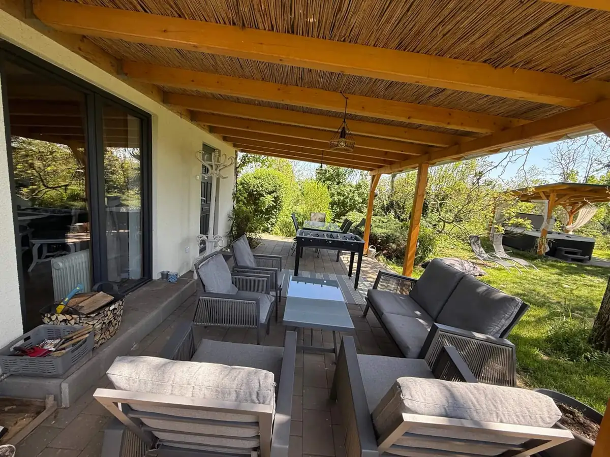
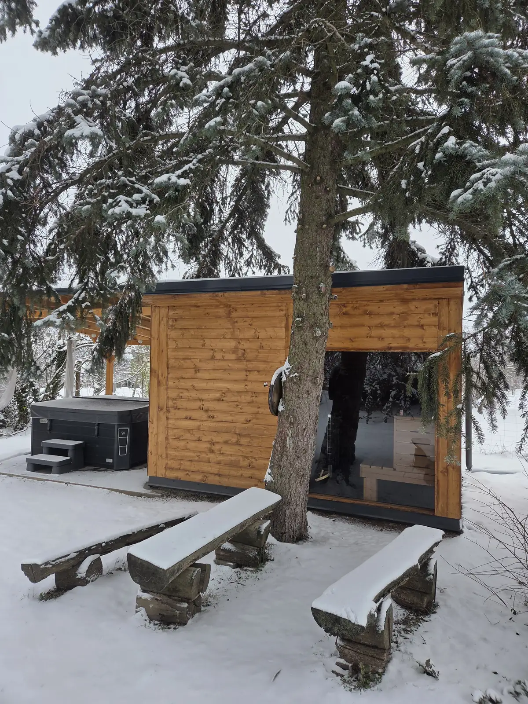
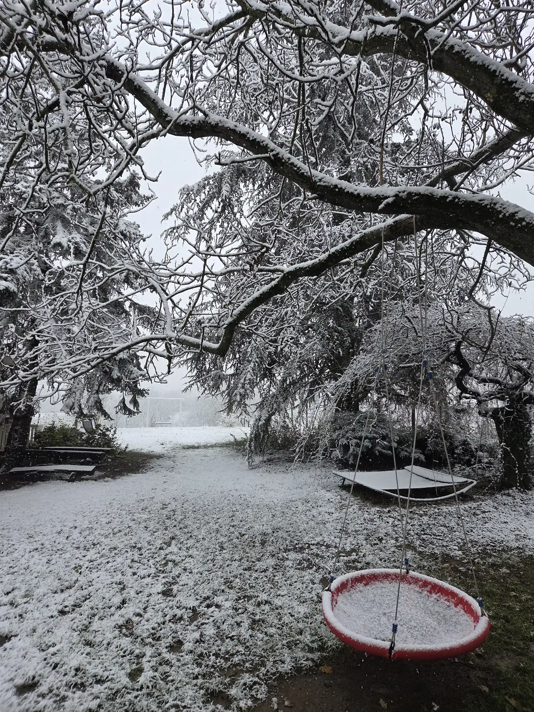
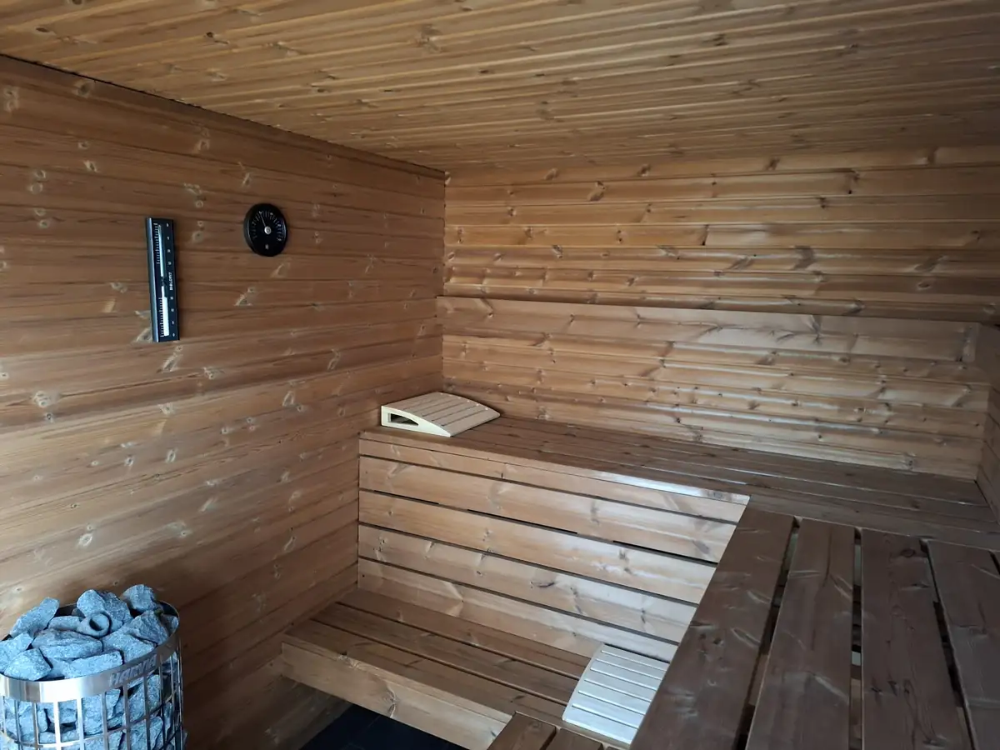

Megérkezel, kiülsz a teraszra
Érkezés 14:00 és éjfél között, a kulcs a kulcsdobozban vár. A fedett terasz a tiéd, előtte a kert hintával, bográccsal, ping-ponggal és csocsóval.

Teljes ház Pécstől 5 km-re, a Mecsekre néző domboldalon. Privát jakuzzi egész évben, finn szauna, kandalló.
Hatalmas fenyők és cédrusok, 1400 négyzetméteres saját kert, a domboldalról kilátás a Mecsekre. A házat egészben kapod meg, csak a tiéd és a társaságodé.

9,8a szallas.hu vendégértékelése, 19 értékelés alapján
Délután megérkezel, este a jakuzziban ülsz, reggel ráérsz. Így telik egy nap a házban.

Érkezés 14:00 és éjfél között, a kulcs a kulcsdobozban vár. A fedett terasz a tiéd, előtte a kert hintával, bográccsal, ping-ponggal és csocsóval.

Ahogy lemegy a nap, bemelegszik a szauna. A gőz után jólesik egy kör a hűvös kertben.

Privát jakuzzi legfeljebb 6 főnek, nyáron és télen, éjjel-nappal. Akkor is meleg vízbe ülsz, ha kint esik a hó.
Kint hideg van, bent ég a kandalló. A ház kisállatbarát, a kutyát és a macskát is hozhatod, ahogy a babát és a gyerekeket is.


Két hálószoba, a nappaliban kihúzható kanapé, így nyolcan is elfértek. Távozás reggel 10 óráig.
Mintaadat, a valódi foglaltság hamarosan
Szabad éjszakaFoglalt éjszaka
Teljes naptár és érdeklődés